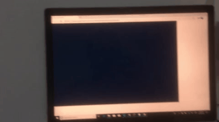
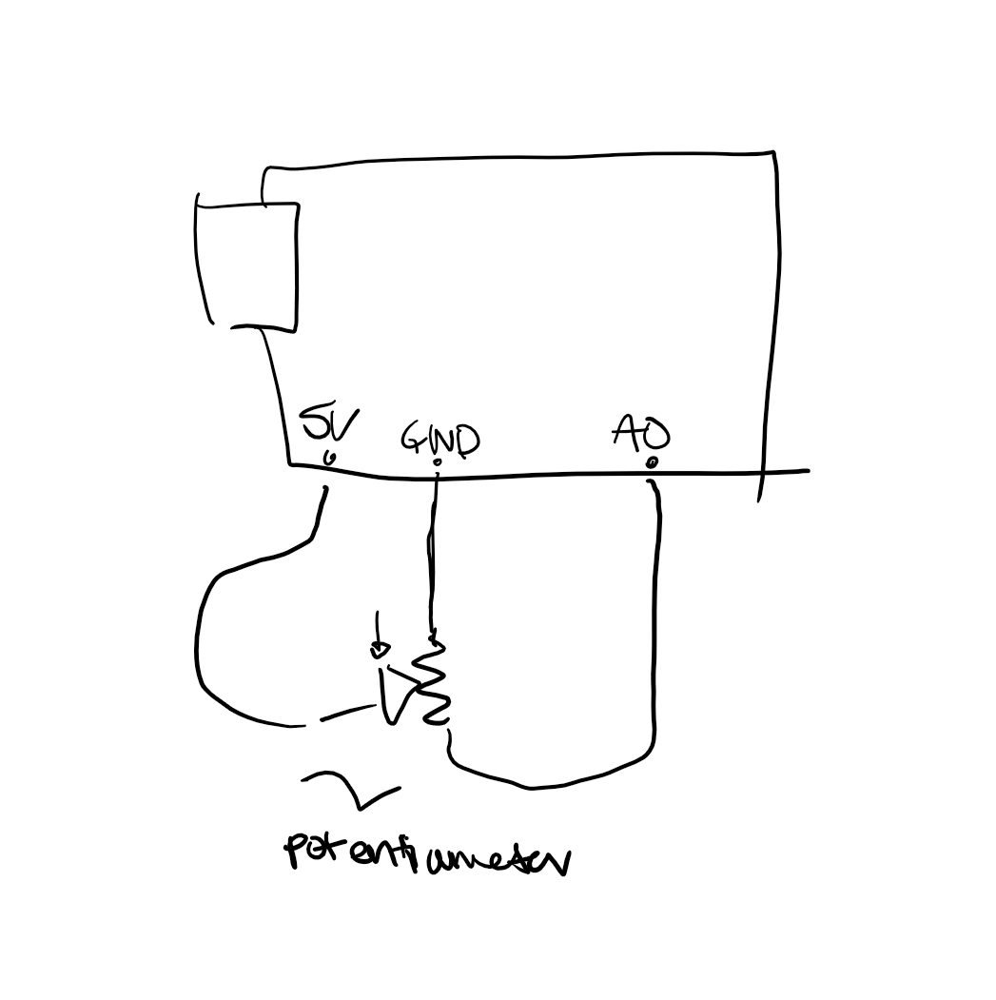

This program creates an interactive webpage with p5.js that interacts with data from the arduino via serial. When the user spins the potentiometer, the webpage displays vertical lines that move higher or lower depending on the reading.
Here is a picture of the circut:
Below is a gif of the program. As I turn the potentiometer to the right, the pink lines on the webpage grow, and as I turn it to the left, the lines shrink.

Below is the p5 communication code. Most noteworthy is the draw function, which calls the graphData function and results in the visual representation of the potentiometer reading.
var serial; // variable to hold an instance of the serialport library
var portName = '/dev/ttyACM0' //rename to the name of your port
var datain; //some data coming in over serial!
var xPos = 0;
function setup() {
serial = new p5.SerialPort(); // make a new instance of the serialport library
serial.on('list', printList); // set a callback function for the serialport list event
serial.on('connected', serverConnected); // callback for connecting to the server
serial.on('open', portOpen); // callback for the port opening
serial.on('data', serialEvent); // callback for when new data arrives
serial.on('error', serialError); // callback for errors
serial.on('close', portClose); // callback for the port closing
serial.list(); // list the serial ports
serial.open(portName); // open a serial port
createCanvas(1200, 800);
background(0x08, 0x16, 0x40);
}
// get the list of ports:
function printList(portList) {
// portList is an array of serial port names
for (var i = 0; i < portList.length; i++) {
// Display the list the console:3
print(i + " " + portList[i]);
}
}
function serverConnected() {
print('connected to server.');
}
function portOpen() {
print('the serial port opened.')
}
function serialError(err) {
print('Something went wrong with the serial port. ' + err);
}
function portClose() {
print('The serial port closed.');
}
function serialEvent() {
if (serial.available()) {
datain = Number(serial.readLine());
//console.log(datain);
}
}
function graphData(newData) {
// map the range of the input to the window height:
var yPos = map(newData, 0, 1023, 0, height);
// draw the line in a pretty color:
stroke(200, 20, 80);
line(xPos, height, xPos, height - yPos);
// at the edge of the screen, go back to the beginning:
if (xPos >= width) {
xPos = 0;
// clear the screen by resetting the background:
background(0x08, 0x16, 0x40);
} else {
// increment the horizontal position for the next reading:
xPos++;
}
}
function draw() {
graphData(datain);
}

Schematic:

Here is my code:
void setup() {
Serial.begin(9600); //begin serial communication
}
void loop() {
int pot = analogRead(A0); // reads the value from the potentiometer
Serial.println(pot); // prints the value to serial
delay(50); // pause
}